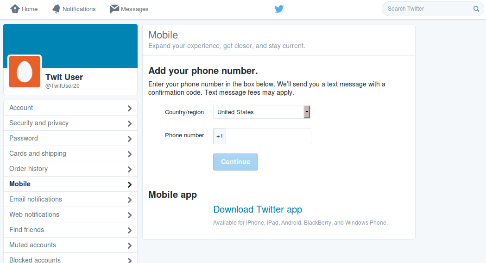
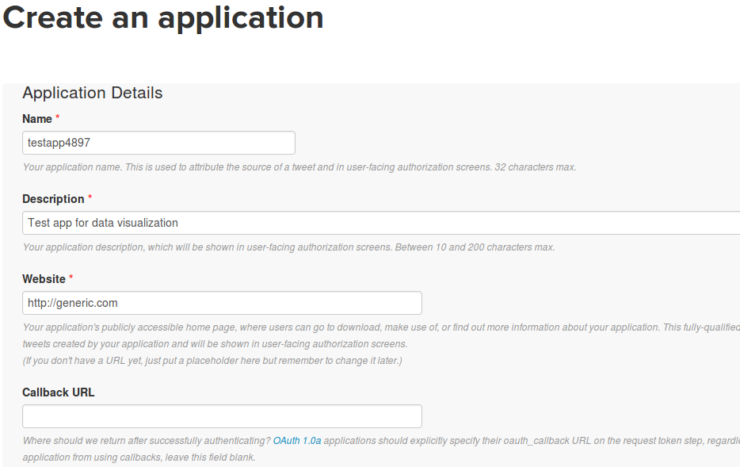
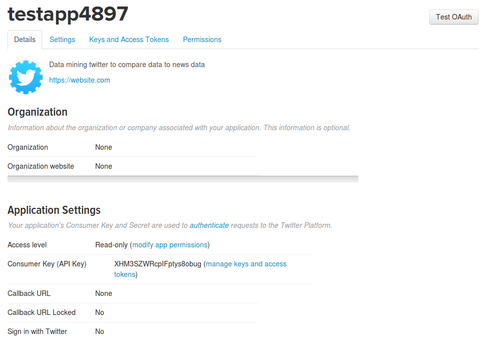
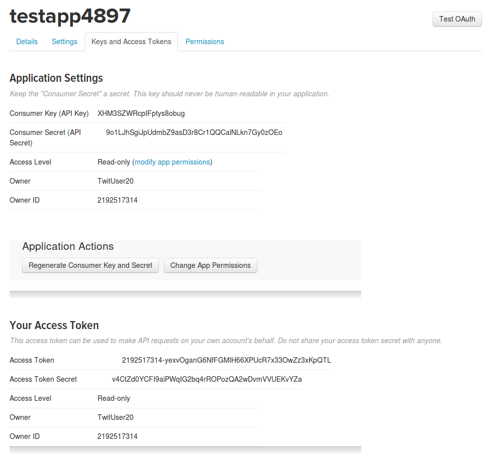

API Authentication
Often, API data sources require authentication, and setup is necessary before MassMine can be authorized to collect data. This section explains how to access the required keys and tokens that allow API access, and how to save those credentials for use in ongoing data colletion projects. The steps below are a one-time setup. Once completed, MassMine will automatically connect to the available data sources for collection projects. The following MassMine sources require credentials or setup for access: - Twitter - TumblrAuthentication for Twitter
To collect data from Twitter you must login to your Twitter account and create a new "application." This "application" is not actually software or a computer program, but it is the access point through which MassMine collects data from Twitter. Every Twitter "application" is provided a certain amount of bandwidth1, and this limits the amount of free data an "application" may access through Twitter's API. For more details on how Twitter limits data access through their API, visit Twitter's online documention. MassMine automatically manages "rate limits" for the user, within the limits permitted by Twitter's bandwidth restrictions.
Creating an Application
Seting up "application" access through Twitter requires a normal Twitter account. If you already have a Twitter account, using it to collect data through Twitter's API will not affect your account. However, in order to add API access to your Twitter account, you must prove account ownership by providing your mobile telephone number. Go to your Twitter home page and click on settings in the drop down menu under the profile and settings tab.
Next, click on the mobile side bar menu option to provide your mobile number.

Twitter will send a text to your phone with a code to confirm your phone number. Follow the steps provided by Twitter to finish confirmation.
Application Setup
After completing mobile verification, remain logged in to your account and go to https://apps.twitter.com, and click on the Create New App button.
On the following screen, fill in the boxes shown below. Under "Name" you will need to provide a unique application name, but "Description" and "Website" are allowed to be generic information.

Application Secrets and Tokens
After creating the "application," click on the application name and it will take you to the page for that application. In there you will click on a link in the middle of the page titled: "manage keys and access tokens."

After clicking on "manage keys and access tokens" link, you will be redirected to the page that provides the credentials MassMine requires in order to collect data from the Twitter APIs. Keep this page open because you will need to copy and paste the keys and tokens on this page into MassMine.

Saving Application Secrets and Tokens in MassMine
While keeping the keys and tokens page open in your browser, return to a terminal window and use the twitter-auth task as shown below. Type in the following command and press ENTER:
massmine --task=twitter-authYou will be asked: Would you like to setup your Twitter credentials? Answer with yes and press ENTER to continue.
Next you will be asked to enter your Consumer Key. Return to your browser window as shown in last image example above. Copy the consumer key from the webpage, paste it back in your terminal, and then press ENTER.
Follow the same process for the Consumer Secret, Access Token, and Access Token Secret. Once you have finished copying the 4 secrets and tokens into MassMine, you will see Authentication setup finished!.
Footnotes: 1By "bandwidth", we mean the amount of data that may be accessed over a specified period of time